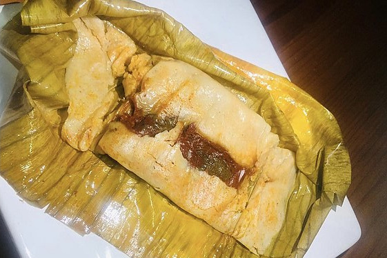

Image by German matus (modified) - Wikimedia Commons - CC-BY-SA-4.0
Tamal(Tamale)
Cuban tamales are a staple of Cuban cuisine delicious and widely enjoyed by people both on the island and abroad. They are so popular in Cuba that they have inspired a variety of hit songs by many musicians.
Ingredients
- 1/2 kg ground pork
- Half an onion
- 1/2 red bell pepper
- 3 cloves of garlic
- 1 large crushed tomato
- Salt to taste
- 1 can of corn
- 3 tablespoons butter
- 1 cup cornmeal
- 1 cup poultry or chicken broth
- 1/4 cup olive oil
- 6 corn husks
Instructions
- First, prepare the vegetables by finely dicing the onion, garlic, and bell pepper.
- Sauté the chopped vegetables in a preheated pan with olive oil. Once the onion becomes translucent, reduce the heat to medium and continue stirring to prevent sticking. Then, add the ground meat and cook for approximately 10 minutes.
- Once the meat is cooked, add the crushed tomatoes and let it simmer for another 15 minutes
- In a separate bowl, mix the corn flour with the chicken or beef broth and let it rest for a while.
- While the meat finishes cooking, process the corn kernels in a food processor or crush them using a mortar and pestle. This creates a thick paste that you will add to the bowl containing the flour and broth mixture.
- When the meat is ready, add it to the flour, corn, and broth mixture as well.
- Next, assemble the tamales using corn husks as wrappers: lay two husks on your work surface, place a small amount of filling in the center, and fold the husks to form small pouches or tamales.
- Secure the tamale pouches with a piece of string or twine.
- Once they are securely sealed and wrapped, place them in a pot of boiling water and cook for about 40 minutes.
Home